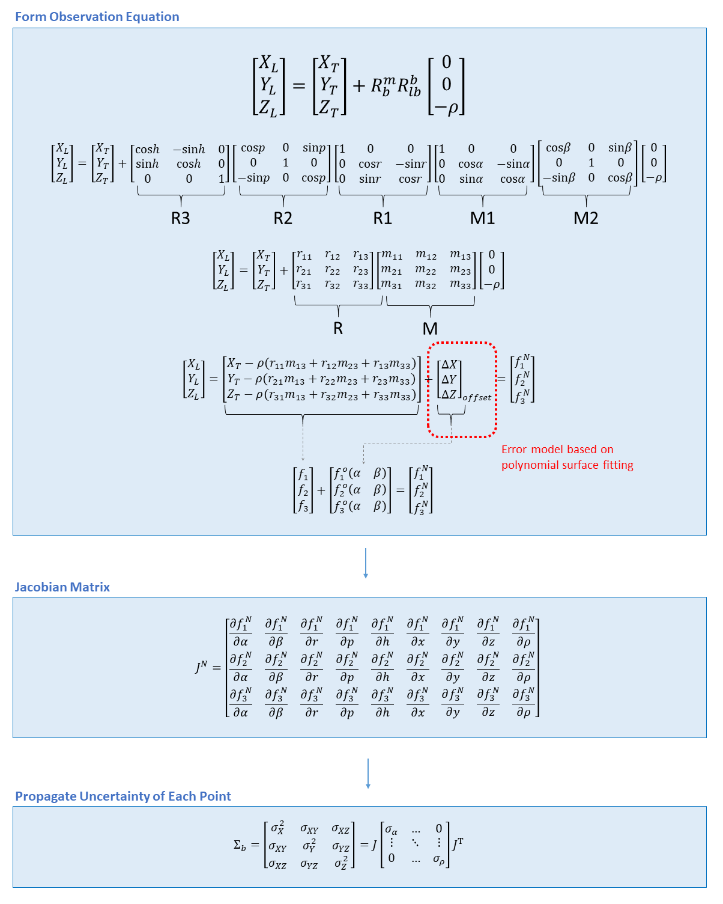

Subaerial Component¶
The subaerial component analytically computes the TPU of the laser pulse at the water surface using the equations shown below. The calculations include polynomial surface fitting to model the differences between the proprietary scan pattern and the implemented scan pattern.
The figure below summarizes the subaerial TPU workflow. First, the laser geolocation equation is formed, where R is the airplane rotation matrix and M is the scanning sensor rotation matrix. To account for the differences between the assumed and actual, proprietary sensor models, the laser geolocation equation includes an error model based on polynomial suface fitting. Second, the Jacobian of the laser geolocation equation is calculated and evaluated using data from the Las files and the corresponding trajectory. Third, the uncertainty of each data point is propagated using the variance/covariance matrix (covariances are assumed to be zero) formed from the uncertainties of the component variables. (The covariances are assumed to be zero.)
Image Credit: Jaehoon Jung